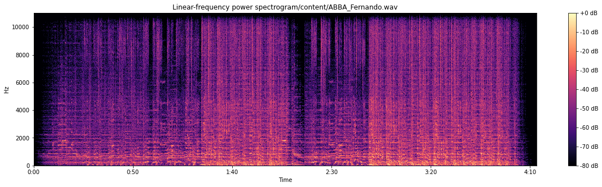
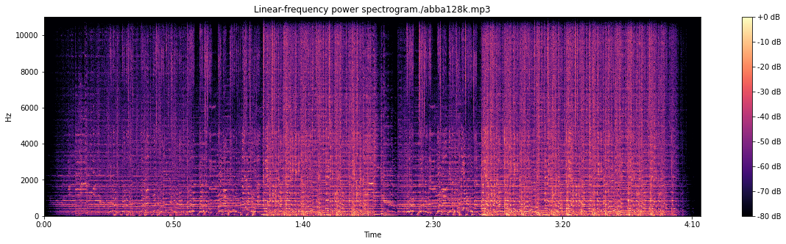
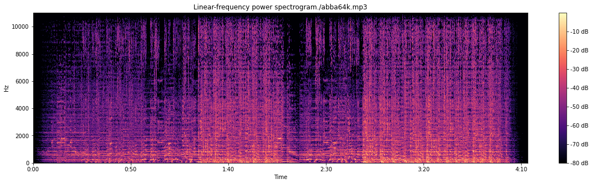
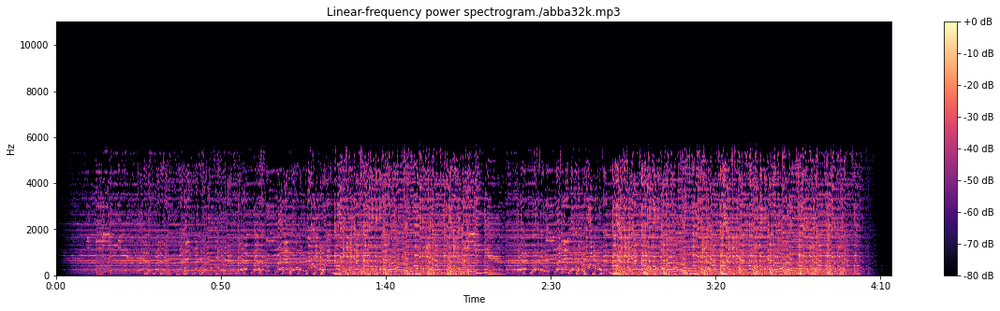
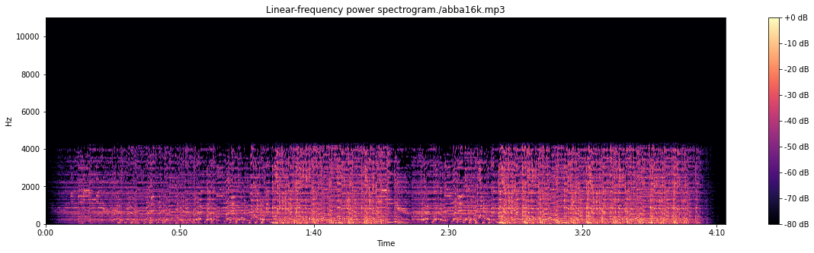
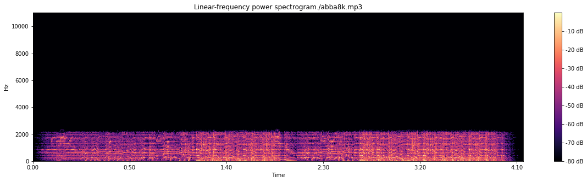

A seguir é apresentado o arquivo de áudio de exemplo.
Arquivo .wav full

Espectrograma do arquivo original
Conversão wav em mp3, 128kbps

Espectrograma do arquivo codificado - 128Kbps
Conversão wav em mp3, 64kbps

Espectrograma do arquivo codificado - 64Kbps
Conversão wav em mp3, 32kbps

Espectrograma do arquivo codificado - 32Kbps
Conversão wav em mp3, 16kbps

Espectrograma do arquivo codificado - 16Kbps
Conversão wav em mp3, 8kbps

Espectrograma do arquivo codificado - 8Kbps
Áudio-descrição desta seção.
A seguir os trechos do áudio com a estrofe selecionada é exibido.
Fernando
Primeira estrofe - Fernando
Gabriel
Primeira estrofe - Gabriel
Pietro
Primeira estrofe - Pietro
Áudio-descrição desta seção.
A seguir são apresentados os parâmetros do modelo LPC, a seperação dos segmentos sonoros e surdos e também o
espectrograma e a envoltória LPC para cada integrante.